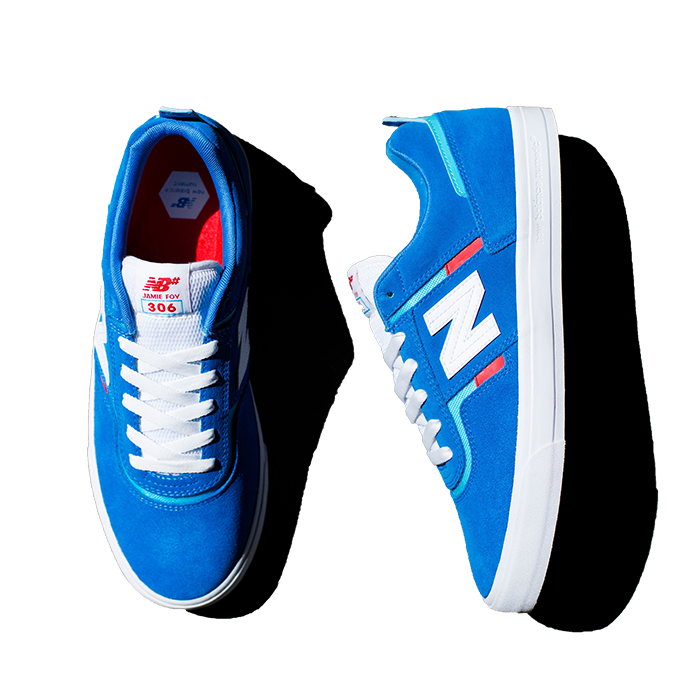

NEW
Newest Shoes
The most New Balance shoe ever
The 574 might be our unlikeliest icon. The 574 was built to be a reliable shoe that could do a lot of different things well rather than as a platform for revolutionary technology, or as a premium materials showcase. This unassuming, unpretentious versatility is exactly what launched the 574 into the ranks of all-time greats. As hybrid road/trail design built on a wider last than the previous generation’s narrow racing silhouettes, the 574 offered a uniquely versatile mix of new, different, uncomplicated, rugged, durable, and comfortable that was adopted as a closet staple across the globe.
The 574 might be our unlikeliest icon. The 574 was built to be a reliable shoe that could do a lot of different things well rather than as a platform for revolutionary technology, or as a premium materials showcase. This unassuming, unpretentious versatility is exactly what launched the 574 into the ranks of all-time greats. As hybrid road/trail design built on a wider last than the previous generation’s narrow racing silhouettes, the 574 offered a uniquely versatile mix of new, different, uncomplicated, rugged, durable, and comfortable that was adopted as a closet staple across the globe.
The classic from archive
The classic is made up of archives. Archives are a collection of documents and records. We visualize the design and style of the CRT300. By presenting it with the CRT300, we will propose the new classic. Always you like you're winning in our CRT300 sneaker, a court classic reinvented for everyday wear. Every detail is designed to scroe style points, from premium suede/leather construction to the expressive colors and modern REVlite cushioning that provides lightweight comport. It's retro sport style that's ready for anything.
The classic is made up of archives. Archives are a collection of documents and records. We visualize the design and style of the CRT300. By presenting it with the CRT300, we will propose the new classic. Always you like you're winning in our CRT300 sneaker, a court classic reinvented for everyday wear. Every detail is designed to scroe style points, from premium suede/leather construction to the expressive colors and modern REVlite cushioning that provides lightweight comport. It's retro sport style that's ready for anything.
Recommended for you
-
Men's 247
-
Fresh Foam Roav
- 
New Balance 306
-
Men's X-90
New Arrivlas
-
NB Thermal Vest
Take to the streets, even when cold weather hits, with the Impact Run Heat Grid Vest. This women's running vest features NB HEAT technology to help keep you warm and dry, and Vaporloft Fill in the front body which adds light, packable insulation. Heat grid material adds extra warmth.
-
Anticipate Half Zip
Inspired by cold-weather running, our NB Heat Grid Half Zip is a versatile and stylish warming layer. This men's running top features NB Heat grid fleece to help keep you warm while wicking away moisture, and a soft poly-knit construction with just a bit of stretch for comfort.
-
Athletics Crop Jersey
The NB Athletics Clash Graphic Tee features a fun graphic and a pop of bright color to match your bold personality. Made with 100% cotton in a washed finish, this men's t-shirt is comfortable and looks great. The front and back of the shirt both feature a cool hand-drawn sketch for a creative finish.